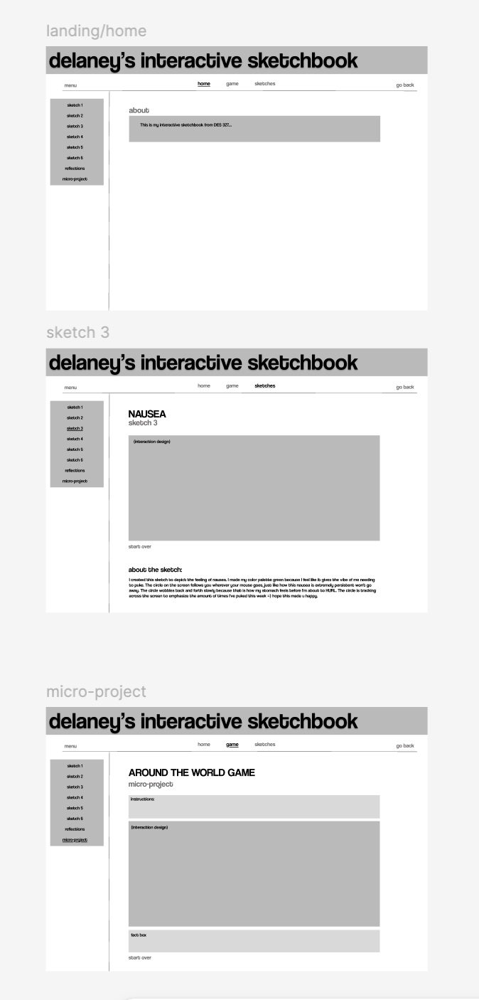
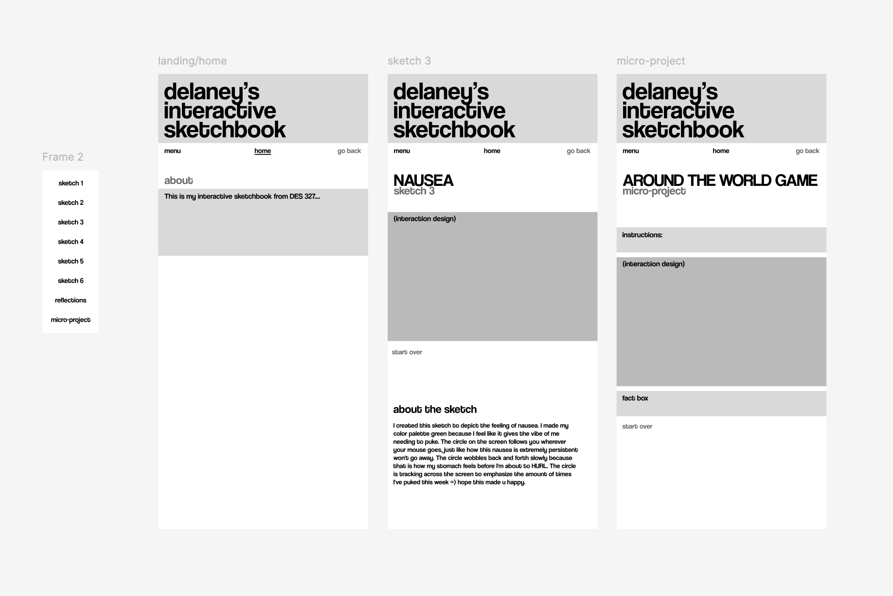
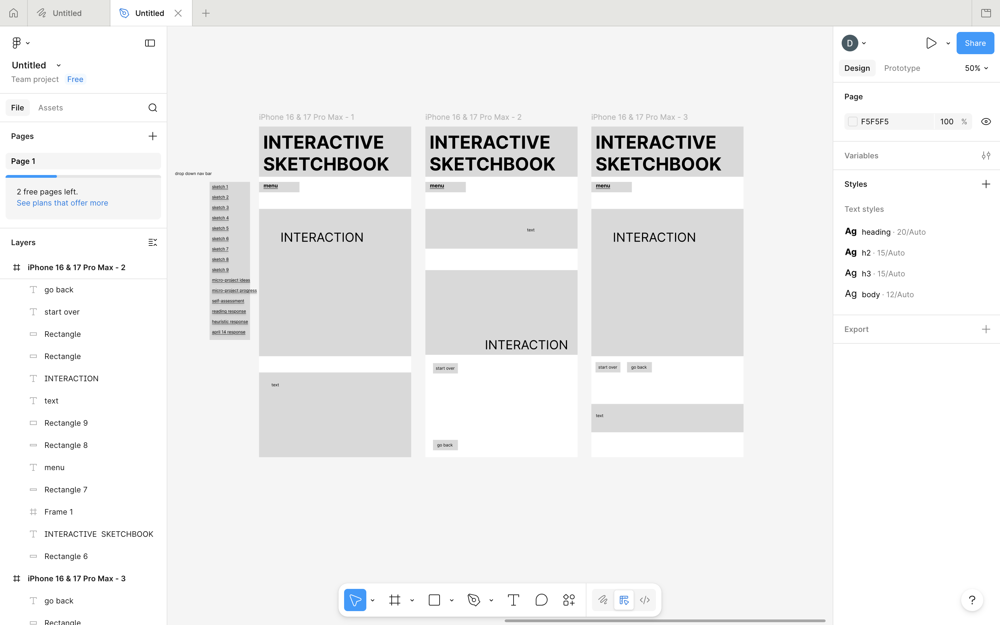

<!DOCTYPE html>
<html lang="en"></html>
<head>
    <meta charset="utf-8">
    <title>Interface System-Self Assessment</title>

    <!-- CSS link -->
    <link rel="stylesheet" href="css/css">

    <!--FONT 1 -->
    <link rel="preconnect" href="https://fonts.googleapis.com">
<link rel="preconnect" href="https://fonts.gstatic.com" crossorigin>
<link href="https://fonts.googleapis.com/css2?family=Darker+Grotesque:wght@300..900&family=Montserrat:ital,wght@0,100..900;1,100..900&family=Rock+3D&family=Rubik+Beastly&display=swap" rel="stylesheet">
    <!-- FONT 2 -->
<link rel="preconnect" href="https://fonts.googleapis.com">
<link rel="preconnect" href="https://fonts.gstatic.com" crossorigin>
<link href="https://fonts.googleapis.com/css2?family=Darker+Grotesque:wght@300..900&family=Montserrat:ital,wght@0,100..900;1,100..900&family=Rubik+Beastly&display=swap" rel="stylesheet">
<!-- p5 core -->
<script src="https://cdn.jsdelivr.net/npm/p5@1.9.0/lib/p5.min.js"></script>
</head>
<body>
<h1>FIGMA LINK:</h1>
<a href="https://www.figma.com/design/Qoaf8eSsoZ4sdYImekOWTZ/Untitled?node-id=0-1&t=12m4o7wT01QZQRhB-1" target="_blank">click to go to delaney's final wireframe!</a>
<h1>Final Snapshots of Wireframe</h1>


<h1>Self Assessment</h1>
<h2>Navigation Model & System Coherence</h2>
<p>20 pts because my site is cohesive and maintains a consistent layout across all pages, keeping the same logic and a simplified system, active states are visible with underlines and color changes.</p>
<h2>Hierarchy & Mobile-First Logic</h2>
<p>18 pts because there is a clear hierarchy between h1, h2, h3 and p elements, and system status is legible because the h1 element is always visible at the top of the screen which changes with each page notifying user of what they are currently viewing.</p>
<h2>Explain how hierarchy survives compression and expands across contexts.</h2>
<p>15 pts because hierarchy survives compression by maintaining a clear visual structure that prioritizes essential information. Even in a condensed format, the most important elements, such as headings and key actions, remain prominent. </p>
<h2>Theoretical Integration Norman Nielson Schniederman</h2>
<p>15 pts because My design applies Normans principles through clear affordances and mapping, using a consistent layout where the sidebar, top navigation, and content areas intuitively signal how users should interact with the interface. It aligns with Nielsen’s heuristics by maintaining strong consistency, minimalist design, and recognition over recall, though visibility of system status could be improved with active state indicators. It also reflects Shneiderman’s rules by supporting user control (e.g., “go back,” “start over”), reducing memory load through persistent navigation, and enabling easy exploration across sketches.</p>
<h2>Cross-Page Consistency</h2>
<p>10 pts because my pages are consistent across all pages.</p>
<h2>Risk & Structural Ambition</h2>
<p>3 pts because I played it quite safe I wasn't really sure how to push it further without keeping it simple and user friendly. If this was for an artistic portfolio piece I def would have played with some experimentation but this seemed to work best in simple form.</p>
<h2>Iterative Development</h2>
<p>9 pts because I did show my iterations but some were not documented.</p>
<h2>Participation & Critique Engagement</h2>
<p>5 pts because I participated actively in all group critiques.</p>
<h1>Previous Snapshots from Other Iterations</h1>



</body>
</html>